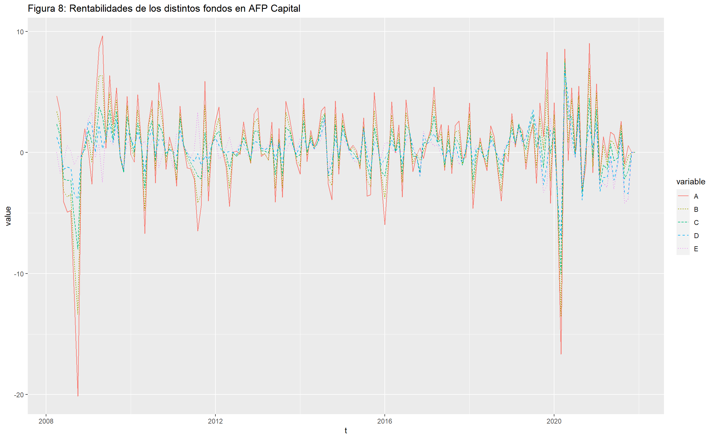

A B C D E
A 1.0000000 0.9902175 0.9178465 0.6795558 0.1494451
B 0.9902175 1.0000000 0.9601701 0.7603196 0.2535628
C 0.9178465 0.9601701 1.0000000 0.9052465 0.4850150
D 0.6795558 0.7603196 0.9052465 1.0000000 0.7886666
E 0.1494451 0.2535628 0.4850150 0.7886666 1.0000000Análisis de la Rentabilidad Real de los Fondos de Pensiones
Introducción
Uno de los aspectos que me resulta más interesante respecto a los polémicos fondos de pensiones en Chile, es su funcionamiento y cómo se ven afectados por acontecimientos tanto internacionales, como los que ocurren en nuestra propia patria, y para eso, necesitamos saber qué son específicamente, los fondos que hay, y las AFP que existen.
Contexto
Las administradoras de fondos de pensiones, o mejor conocidas como A.F.P, son instituciones financieras encargadas de administrar los fondos de cuentas individuales de ahorro para pensiones, entonces corresponden a un patrimonio constituido por todas la cotizaciones obligatorias y voluntarias que efectúan los trabajadores en su cuenta de capitalización individual, más depósitos voluntarios, y aportes adicionales, junto a las rentabilidades de sus respectivas inversiones, restando las comisiones que cobran la administradora.
Existen 5 alternativas de inversión, denominados fondos de pensiones tipo A, B, C, D y E, estos se diferencian en la proporción de los recursos financieros invertidos en renta variable y renta fija, en donde los primeros representan propiedad de una sociedad o empresa, tales como acciones, por ende tienen mayor riesgo y rentabilidad esperada, los segundos tienen una rentabilidad conocida que varía de acuerdo a su valor de mercado, y tienen menor riesgo y menos rentabilidad esperada.
De los 5 fondos antes mencionados, el fondo A tiene una mayor proporción invertida en renta variable, que disminuye a medida que nos acercamos a los fondos B, C, y D, y finalmente el fondo E, invierte principalmente en renta fija.
Actualmente las inversiones se rigen por los siguientes máximos y mínimos para instrumentos de renta variable:
Fondo A: Máximo = 80%, Mínimo obligatorio = 40%
Fondo B: Máximo = 60%, Mínimo obligatorio = 25%
Fondo C: Máximo = 40%, Mínimo obligatorio = 15%
Fondo D: Máximo = 20%, Mínimo obligatorio = 5%
Fondo E: Máximo = 5%, Mínimo obligatorio = 0%
Objetivos
Ahora conociendo el contexto de las AFP, y sus rasgos generales de inversión, podemos plantearnos las siguientes preguntas:
¿Cuál de las AFP presenta mejores resultados?.
¿Qué tanto afectó a las AFP la crisis subprime del 2008?.
¿Qué tan mal dejó a las AFP el terremoto del 2010?.
¿Cómo se vieron afectadas las rentabilidades de las AFP por el estallido social ocurrido en octubre de 2019?.
¿Cómo ha afectado la pandemia del 2020 a las rentabilidades de las AFP?, ¿Fue negativo el impacto?.
¿Qué fondos se ven menos afectados por los problemas nacionales?.
¿Qué fondos se ven menos afectados por problemáticas internacionales?.
Entonces además de observar el rendimiento de los distintos fondos y las distintas AFP, vamos a verlo en perspectiva histórica, para observar como se comporta su rentabilidad a lo largo de los años, haciendo énfasis en algunos años clave.
Datos
Desde la página de la superintendencia de pensiones, podemos encontrar una serie de tablas con las rentabilidades de los distintos tipos de fondos, y tipos de AFP, los cuales podemos seleccionar por mes y año, desde el año 2005 hasta hoy, para motivos de mi informe, desecharé el año 2005 ya que tiene demasiados valores faltantes.
Para poder comenzar, ya que la página no nos permite descargar ningún documento con los datos y además todas las selecciones cuentan con la misma url, usando “web-scraping”, obtendremos los datos de la primera y segunda columna de cada tabla, pues contienen el nombre de la AFP y su rentabilidad obtenida es mes y año respectivos, por ende haciendo uso de Python, y con ayuda de los paquetes (BeautifulSoup, Chromedriver, Selenium, Pandas, Time).
Debido a la gran cantidad de iteraciones que debe hacer el documento, no lo incluiré de manera funcional en el informe, el link se puede encontrar en el anexo.
Así ya disponemos de una base de datos que podemos importar, he sido cuidadoso a la hora de definir los tipos de cada variable, guardar los números en formato float, y variables categóricas como string, también reemplacé las comas por puntos, datos vacíos por 0.0 (float) y eliminé los símbolos %, por lo que no será necesario limpiar los datos.
A la hora de hacer el análisis, se filtrarán los datos según se requiera, y se eliminaran AFPs con pocas observaciones y se usarán fondos representativos de ser necesarios.
Descripción inicial de las variables en el archivo rentabilidad_afps:
| Variable | Tipo | Descripción |
|---|---|---|
| A.F.P. | Cadena de texto | Nombre de la AFP |
| A | Punto flotante | Rentabilidad Fondo A |
| B | Punto flotante | Rentabilidad Fondo B |
| C | Punto flotante | Rentabilidad Fondo c |
| D | Punto flotante | Rentabilidad Fondo D |
| E | Punto flotante | Rentabilidad Fondo E |
| Año | Entero | Año respectivo |
| Mes | Cadena de texto | Mes respectivo |
Además, sea \(X_t\) el valor del fondo en el momento t, tenemos que la rentabilidad porcentual es equivalente a :
\[ \frac{X_t - X_{t-1}}{X_{t-1}} \]
Resultados
Analizamos la correlación entre los valores de los distintos fondos, y podemos ver que los fondos que menos se parecen respecto a rentabilidades, son el A y el E, pues tienen una correlación bajísima, lo cuál es lógico, ya que sus niveles de riesgo y sus objetivos son muy distintos, así, en base a estos dos fondos, haré la mayor parte del análisis ya que son los que representan el blanco y el negro en las AFP.
A B C D E
3.849365 2.896921 2.085363 1.582981 1.309632 Consistente con los supuestos de la introducción, los fondos con más renta variable presentan mayor desviación estándar, y el fondo E tiene variabilidad mínima.
Para la primera revisión de los datos, usaremos particularmente las rentabilidades del Fondo A de AFP Capital, inicialmente nos interesa saber como se comportan sus momentos, y como ha progresado la rentabilidad a lo largo del tiempo, también queremos observar si la serie tiene rasgos estacionarios, y ver si estos se podrían extrapolar a las demás AFPS y fondos.

Como podemos observar en la Figura 1, las rentabilidades presentan una alta volatilidad, y parecieran tener una media bastante cercana a 0, también son notorias las caídas en los períodos 2008-2009 y 2020, que calzan con la crisis económica del 2008 y la pandemia COVID.

Tenemos que los datos no tienen una estructura de correlación notoria, lo que es habitual en los datos financieros, por lo que es necesario analizar los retornos al cuadrado:

Se puede observar una estructura de correlación, pero no tenemos suficiente evidencia como para sacar alguna conclusión, ahora es importante analizar si es que los datos tienen alguna distribución en particular, y como se comportan sus momentos:
Warning: The dot-dot notation (`..density..`) was deprecated in ggplot2 3.4.0.
i Please use `after_stat(density)` instead.`stat_bin()` using `bins = 30`. Pick better value with `binwidth`.
Observamos una distribución con ciertos indicios de normalidad, pero con un sesgo muy marcado, y probablemente altos niveles de curtosis, ya que las colas representan mucho % de la figura, por lo que la normalidad de las rentabilidades está descartada, para ajustar un modelo probablemente sea necesario hacer transformaciones o cambiar el enfoque del análisis.

Cómo era de esperar, tenemos una desviación muy grande de la normalidad, ningún cuantil en particular con buena alineación con la distribución normal, un histograma muy sesgado, y con las colas bastante pesadas, por lo que los métodos de regresión usuales quedarían descartados.
[1] "AFP A B C D E"[1] "CAPITAL 0.401 0.353 0.32 0.248 0.224"
[1] "CUPRUM 0.453 0.402 0.365 0.286 0.232"
[1] "HABITAT 0.481 0.438 0.397 0.314 0.261"
[1] "MODELO 0.465 0.384 0.303 0.24 0.176"
[1] "PLANVITAL 0.459 0.404 0.346 0.262 0.193"
[1] "PROVIDA 0.456 0.398 0.339 0.268 0.205"
[1] "UNO 0.675 0.456 0.08 -0.243 -0.504"
[1] "SISTEMA 0.461 0.41 0.363 0.284 0.237"
[1] "BANSANDER 0.829 0.717 0.586 0.469 0.462"
[1] "SANTA MARIA 0.758 0.723 0.594 0.483 0.4"En la tabla anterior tenemos los retornos promedios de cada AFP en cada fondo, y tenemos algunos datos anormales, BANSANDER, UNO, SANTA MARIA, ya que tienen rentabilidades demasiado altas en comparación al resto de las AFP, y el resto no presenta muchas diferencias significativas, se ve que sus rentabilidades están en un rango bastante común.
Otra medida importante con la que podemos comparar fondos, es su cantidad de meses positivos sobre los meses totales que ejercieron, así primero obtenemos los meses que ejercieron cada AFP:
[1] "AFP N Obs"[1] "CAPITAL 165"
[1] "CUPRUM 192"
[1] "HABITAT 192"
[1] "MODELO 136"
[1] "PLANVITAL 192"
[1] "PROVIDA 192"
[1] "UNO 27"
[1] "SISTEMA 192"
[1] "BANSANDER 27"
[1] "SANTA MARIA 27"Inmediatamente descartamos Bansander y Santa Maria, ya que están discontinuadas, tampoco ejercieron por mucho tiempo, por lo que podrían haber estado funcionando en años donde les fue mal a todas, y haber esquivado algunas crisis, haremos lo mismo con AFP UNO, puesto que tenemos muy pocos datos en comparación a las demás.
[1] "AFP A B C D E" AFP A B C D E
1 CAPITAL 0.401 0.353 0.32 0.248 0.224
2 CUPRUM 0.453 0.402 0.365 0.286 0.232
3 HABITAT 0.481 0.438 0.397 0.314 0.261
4 MODELO 0.465 0.384 0.303 0.24 0.176
5 PLANVITAL 0.459 0.404 0.346 0.262 0.193
6 PROVIDA 0.456 0.398 0.339 0.268 0.205
7 SISTEMA 0.461 0.41 0.363 0.284 0.237Ahora con las tablas más limpias, vemos que tienen resultados bastante similares las AFPS entre sí, y seguimos con tendencias muy similares a las observadas inicialmente, menores rentabilidades en los fondos más bajos, y mayores en los más altos.
Para el resto del análisis, usaremos AFP Capital, para evitar redundancia.

Podemos observar que los fondos tienen tendencias similares en movimientos, pero se diferencian por su volatilidad, en particular tenemos que para el período 2008-2009, a todos los fondos les afectó la recesión, siendo la magnitud del efecto distinto, el fondo A recibió un golpe horrible, mietras que el fondo E tuvo solamente una disminución pequeña, un caso especial es la épica covid, pues vemos que los fondos se comportaron muy similarmente, por lo tanto no sería una locura pensar que la pandemia tuvo un efecto similar en todos los fondos, en la siguiente figura se nos presenta este mismo efecto pero desagregado:

AFP A B C D E Meses_Totales
1 CAPITAL 91 89 98 40.88 107 165
2 CUPRUM 109 111 116 54.98 128 192
3 HABITAT 109 109 115 60.3 132 192
4 MODELO 75 74 75 32.67 90 136
5 PLANVITAL 108 109 115 50.38 126 192
6 PROVIDA 107 108 117 51.41 127 192
7 SISTEMA 109 110 116 54.48 129 192 AFP A_Perc B_Perc C_Perc D_Perc E_Perc
1 CAPITAL 0.5515152 0.5393939 0.5939394 0.2477576 0.6484848
2 CUPRUM 0.5677083 0.5781250 0.6041667 0.2863542 0.6666667
3 HABITAT 0.5677083 0.5677083 0.5989583 0.3140625 0.6875000
4 MODELO 0.5514706 0.5441176 0.5514706 0.2402206 0.6617647
5 PLANVITAL 0.5625000 0.5677083 0.5989583 0.2623958 0.6562500
6 PROVIDA 0.5572917 0.5625000 0.6093750 0.2677604 0.6614583
7 SISTEMA 0.5677083 0.5729167 0.6041667 0.2837500 0.6718750Nuevamente nos encontramos con diferencias muy leves de un fondo al otro, tenemos resultados similares de meses positivos, rentabilidades promedios, ¿qué otra diferencia podría ser importante?
Tenemos que las AFPS cobran comisiones que dependen de la renta imponible de los usuarios, ya que no tenemos diferencias significativas en las rentabilidades promedios ni el % de meses positivos, las diferenciaremos por su comisión:
| A.F.P. | % Comisión |
|---|---|
| CAPITAL | 1.44 |
| CUPRUM | 1.44 |
| HABITAT | 1.27 |
| MODELO | 0.58 |
| PLANVITAL | 1.16 |
| PROVIDA | 1.45 |
Tabla de comisiones de las AFPS para Noviembre 2022 (Fuente 4 en el Anexo)
Tenemos que todas las comisiones son bastante bajas <2%, pero el % de la AFP Modelo es mucho más bajo, por lo que la tendremos en consideración.
Ahora nos interesaría ver como han reaccionado los fondos a los diversos sucesos de los últimos años, como la crisis financiera del 2008, el estallido social en 2019, la pandemia de coronavirus en el 2020, entre otros.
Fondo A
Época 2007-2010 (Crisis Subprime)

Época 2019-2021 (Covid)

}
Epoca 2021-Actualidad
Fondo E
Época 2007-2010 (Crisis Subprime)
Época 2019-2021 (Covid)
Época 2021-Actualidad
Comenzamos con la crisis financiera:
Se observa, que este año fue bastante malo para ambos fondos en general, pero el fondo A se vió mucho más afectado, esto se puede deber a las inversiones más arriesgadas en el extranjero, mientras tanto, el fondo E percibió pérdidas tales de un mes malo normal, así que esta crisis, al originarse en el extranjero, afectó mucho más al fondo A, que perdió casi dos años de ganancias, y todavía se situaría en una posición bastante mala en los meses siguientes.
Para la fecha en particular del terremoto, no se ve que haya mucho efecto en los rendimientos de estos fondos, pero el fondo A se mostró más errático de lo normal e impredecible, aún así, reportó muchas ganancias en varios meses, al igual que el fondo E, que casi no reportó meses malos, aparte de la caída en mayo del fondo A, esta crisis no lo afectó casi en nada en comparación a la crisis subprime, de alguna manera, las pérdidas materiales provocadas por el terremoto, no sacudieron tanto a los activos financieros, probablemente alguna devaluación del peso, le haya otorgado ganancias al fondo A, con el intercambio de divisas.
Este año en particular, es el primero en el cual el fondo E, ha tenido pérdidas muy fuera de lo común, mientras que en los meses posteriores al estallido, logró recuperarse, mientras el fondo A obtenía ganancias bastante altas, tenemos otro caso de una crisis nacional, que afecta mucho más al fondo E, y que termina siendo un año muy bueno para el fondo A, hasta la llegada de diciembre, que trae consigo números negativos para el fondo A, en términos generales, tanto las pérdidas como ganancias para ambos fondos no sufrieron cambios muy drásticos, y el efecto en los fondos de este suceso, están muy lejos del nivel de la crisis financiera.
Acá tenemos una crisis que comenzó siendo internacional, llegando al país eventualmente, los cierres de fronteras y los toques de queda, pudieron haber tenido mucha incidencia en las pérdidas iniciales del fondo A, al desacelerar la economía de la mayoría de los países en el extranjero, entonces la pandemia afectó mucho más al fondo A que al E, aunque finalmente el primero logró recuperarse, esto podría ser debido al alza de las empresas farmacéuticas y de tecnología, en general, el fondo E tuvo un año bastante regular, y el fondo A solo logró quedar en igualdad de condiciones luego de muchos meses, así que nuevamente nos encontramos con un suceso internacional, que tiene un efecto mucho más grande en el fondo A que en el fondo E.
Conclusión
Sobre los AFPs en particular, a primer instancia no es muy relevante cual ya en fondos similares, la mayoría reportan cantidades de meses positivos similares, y ganancias relativamente parecidas, pero es destacable que la AFP Modelo tiene la comisión más baja de las reportadas ~0.98%, por lo que teniendo en cuenta los resultados anteriores, sería nuestra AFP a elegir.
Luego de haber analizado los gráficos, podemos concluir que en su mayoría, las crisis internacionales afectan muy negativamente al fondo A, mientras que los sucesos que ocurren en nuestro país, no generan mucho efecto en sus rentabilidades, lo que es contrario al fondo E, que es muy reactivo a las tragedias nacionales, además podemos observar la gran diferencia de ganancias que hay entre ambos fondos, ya que a pesar de tener pérdidas exageradas, el fondo A siempre logra recuperarse, y los años que han resultado terribles para este, sin incluir la crisis financiera, simplemente lo han dejado sin ganancias, o con unas pérdidas que no superan al 5%, esto nos da información importante para decidir el nivel de riesgo a elegir en un fondo, ya que mientras superior sea el lapso de tiempo, mayor es la diferencia de rentabilidades que hay, y que a pesar de que las cosas no estén bien en el país, podemos seguir aumentando nuestro patrimonio.
Anexo
[2] Rentabilidades
[3] Web-Scraping
[4] Comisiones